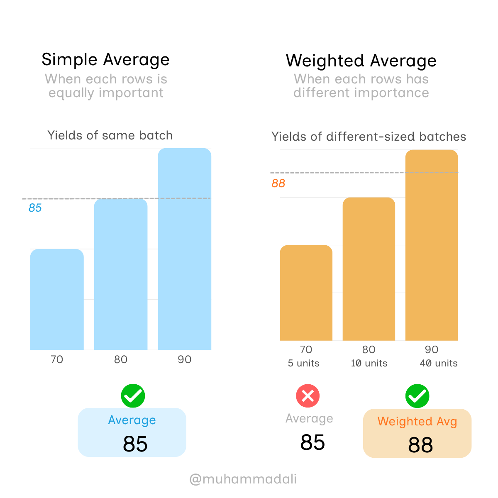

Simple vs. Weighted Average: The Dashboard Mistake That Misleads Everyone
It's 5 minutes before the weekly review.
The dashboard looks perfect. KPIs are green. One final number to be added: the plant's overall yield.
Three yield values from three batches produced this week give a quick average. 85% overall yield. The report goes out, management sees a healthy week, gives it a quick nod, and says, "Go ahead."
And here, that harmless number lied to everyone silently. The real number was 88%.
This 3-point gap looks tiny, but it's the difference between "on target" and "ahead of target."
So, what actually went wrong?
An overlooked averaging concept. Simple Average vs. Weighted Average.
Simple Average, also called Arithmetic Mean in maths, adds all values and divides by the total number of values. So, every value gets equal importance. On the other hand, a weighted average multiplies each value by its weight (such as production volume, sales, or sample size), adds the results, and divides by the total weight. So, larger or more important groups have a greater influence on the final number.
Let's quickly look at the data behind that dashboard.
Three batches ran that week — 70% yield, 80% yield, 90% yield. Simple average: 85%. Clean number, easy to report.
But those batches weren't the same size. The first batch was small — 5 units. The second, 10 units. The third, a full 40-unit run. Most of the week's output came from the batch that hit 90%, not the one that hit 70%.

Now, weight each result by how much it actually represents, and the real average comes out to 88% — not 85%.
Three points gap sounds small. But that gap decides whether a plant manager tells leadership the process is drifting or performing above target. It decides whether an engineer spends the next week troubleshooting a "problem" that doesn't exist — or missing one that does.
Why This Happens? (even with professionals)
This mistake happens for three reasons — and all of them are surprisingly simple.
- "Average" is right there in the fields pane — just drag, drop, done. Weighted average takes one extra step: a small formula, a bit of thought about what your data represents. So, the default option becomes a convenient shortcut.
- Most people see each row as one data point, not what that row represents (customers, sales, units, hours, etc.). Moreover, unequal groups are invisible from the dashboard. A chart shows three bars — 70, 80, 90. It doesn't show that one bar represents 5 units and another represents 40. And without this context, nothing prompts you to question the number.
- The look and feel of "Average": it feels like a neutral word or the typical value, so nobody stops to check what's actually being averaged. And in most cases, the numbers look right (like in our case), making it go unnoticed.
The 10-Second 'Average' Check Can Save You!
I know it's tedious to weigh every number on every dashboard. So don't. Just ask three questions before you average.
- Are these groups the same size? Think: batches, shifts, stores, sensors, samples — if some groups are bigger than others, be careful with a simple average.
- Should bigger groups count more? Think: should 1,000 customers influence the result more than 10 customers?
- Am I about to make a decision based on this number? Think: if this KPI will drive actions or a call to leadership — check it before you trust it.
If your answer is yes to any of these, don't drag "Average" into the field and stop there. Take the extra step. Weight it.
Follow for more practical data thinking → LinkedIn
If this changed how you'll look at your next dashboard, share it with someone who needs to see it too.